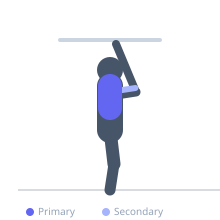

Exercise guide / Archer Pull-Up
Archer Pull-Up
The archer pull-up is an advanced calisthenics progression toward the one-arm pull-up. The lifter pulls up while simultaneously extending one arm out to the side straight, so the working arm performs most of the pulling while the extended arm assists with balance and grip. This creates a large strength imbalance that develops unilateral pulling strength without fully committing to a one-arm pull-up.
Primary muscles
latissimus dorsi
Secondary muscles
biceps brachii long head
teres major
rhomboid major
Stabilizers
transverse abdominis
infraspinatus
Equipment
Pull-Up Bar (Doorframe)
Optional
Pull-Up Bar (Wall-Mounted)
Pull-Up Bar (Freestanding Tower)


Starting position
- Hang from a pull-up bar with a wide overhand grip, arms fully extended.
Setup
- Use a wide pull-up bar or gymnastic rings set wide enough to allow one arm to extend laterally. Ensure the bar or anchor point can support your full weight.
Steps
- Step 1: Begin in a dead hang with both hands gripping the bar wide.
- Step 2: Initiate a pull-up toward one side, bending that elbow and pulling the chest toward the working hand.
- Step 3: Simultaneously extend the opposite arm straight out to the side, keeping it relatively straight but with a slight soft elbow.
- Step 4: At the top, the chin should be near or above the working hand, with the other arm extended.
- Step 5: Lower under control back to a dead hang, then repeat on the opposite side.
Coaching cues
- Think of it as a one-arm pull-up with a training wheel on the other side
- The extended arm should feel like it is barely helping
- Keep the core tight to prevent swinging
Breathing
- Exhale as you pull up. Inhale on the descent.
Range of motion
- Full dead hang at the bottom to chin above working hand at the top.
Tempo
- Controlled concentric (2–3s), 1s hold, 3s eccentric
Common mistakes
- Not extending the assisting arm fully, which makes it too similar to a standard pull-up
- Kipping or using momentum rather than strict pulling strength
- Not controlling the descent, which skips the eccentric stimulus
Safety
- This is an advanced exercise — only attempt after achieving 10+ strict pull-ups with ease
- Ensure grip is secure before each rep
Training
- strength: 2–5 reps
- strength: 3–6 sets
- Rest: {'strength': 180}